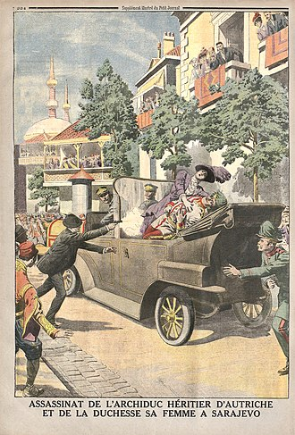
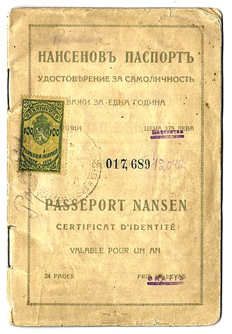

Part II · The Great War · Chapter 4
Inherits: Russo-Japanese 1905 (ch. 3) · Feeds: Versailles (ch. 6)
Who started 1914
On 28 June 1914 a car takes a wrong turn in Sarajevo, reverses, and stops in front of a nineteen-year-old with a pistol. That accident explains the murder. It does not explain the next thirty-eight days, at the end of which the great powers of Europe are at war with one another. Five books in this chapter narrate those days almost hour by hour. Three others reach 1914 and begin the war somewhere else entirely. And the five cannot agree which move made the war — or, as it turns out, on what day the move was made.

One inheritance carries straight into that argument. The German war plan on all five of these ladders is dated to 1905, and it rested on a single assumption about the empire Japan had beaten that year — OpenStax prints a Schlieffen Plan that “rested on the belief that Russia would be slow to mobilize,” and the Belarusian book has Germany striking west while медлительная Россия, slow-moving Russia, has not yet deployed in the east. Everything below turns on how fast Russia moved, and on what day a textbook says it started.
Everybody prints the same month. Which move does your textbook make the one that turned a murder into a world war?
1 The boring facts
- 28 June 1914: Archduke Franz Ferdinand, heir to Austria-Hungary, and his wife Sophie are shot dead in Sarajevo by Gavrilo Princip. He and the other conspirators are Bosnian Serbs — subjects of Austria-Hungary — armed and passed across the Serbian border, which asks arriving travellers for no papers, by officers connected to a secret society.
- 5–6 July: Berlin assures Vienna of support whatever it decides — the assurance later nicknamed the “blank cheque.”
- 23 July: Austria-Hungary delivers an ultimatum to Serbia with a forty-eight-hour deadline. Serbia’s reply of 25 July accepts most of the demands and qualifies the rest.
- 28 July: Austria-Hungary declares war on Serbia.
- 29–31 July: Russia orders partial mobilisation, cancels it, then orders general mobilisation — the sequence this chapter is about. 31 July: Germany demands that Russia stop.
- 1 August: Germany declares war on Russia. 3 August: on France. 4 August: German troops cross into Belgium and Britain declares war on Germany the same day. 6 August: Austria-Hungary declares war on Russia.
- 1919: Article 231 of the Treaty of Versailles records the responsibility of Germany and her allies. The scholarly argument about who caused the war has restarted at least three times since — most loudly with Fritz Fischer in the 1960s and again around the centenary.
2 The ladder
Five of these classrooms take a student inside the thirty-eight days. They are ordered here by how much choice they allow the people making the decisions: war as an automatic mechanism, then shared culpability, then shared culpability with one bloc named, then a chosen first mover, then deliberate provocation.
| Classroom | Which move makes the war | One-line tag |
|---|---|---|
| US · OpenStax 2022 |
“Emboldened by support from Germany’s ‘blank check,’ Austria-Hungary declared war on Serbia on July 28, 1914, after Serbia failed to meet the demands of the Austrian ultimatum. Russia ordered mobilization of its troops on July 30 in response. Germany now found itself pulled into the fight whether it wanted to be or not, declaring war on Russia on August 1 and ordering full mobilization.” |
War as automatic mechanism |
| BY · Кошелев 2021 |
«Австро-Венгрия решила „проучить“ прямо не причастную к террористическому акту Сербию и выдвинула ей невыполнимые требования. С этого времени и до начала военных действий Австро-Венгрия и Германия предъявляли странам Антанты только ультиматумы.» “Austria-Hungary decided to ‘teach a lesson’ to Serbia, which was not directly implicated in the terrorist act, and put impossible demands to it. From that time until the start of military operations, Austria-Hungary and Germany presented the Entente countries with nothing but ultimatums.” |
Shared culpability, after a one-sided list |
| RU · Чубарьян 2023 |
«Так убийство эрцгерцога было использовано в качестве повода для начала международного кризиса. Вильгельм II подталкивал австрийцев „покончить с сербами“.» “Thus the assassination of the archduke was used as a pretext for the beginning of an international crisis. Wilhelm II was pushing the Austrians to ‘finish off the Serbs’.” |
Shared culpability, one bloc unprovoked |
| IT · Sabbatucci–Vidotto 2004 |
«L’Austria compì la prima mossa inviando, il 23 luglio, un durissimo ultimatum alla Serbia. Il secondo passo lo fece la Russia assicurando il proprio sostegno alla Serbia…» “Austria made the first move by sending, on 23 July, a very harsh ultimatum to Serbia. The second step was taken by Russia, assuring Serbia of its support…” |
Chosen moves, in numbered order |
| UK · Lowe 2013 |
“It is difficult to analyse why the assassination in Sarajevo developed into a world war, and even now historians cannot agree. Some blame Austria for being the first aggressor by declaring war on Serbia; some blame the Russians because they were the first to order full mobilization; some blame Germany for supporting Austria, and others blame the British for not making it clear that they would definitely support France.” |
Deliberate provocation — and the argument about it |
3 The tell
Start with what nobody disputes. All five books name Princip. All five run the same cascade — ultimatum, declaration on Serbia, Russian mobilisation, German declarations on Russia and France, Belgium, Britain. All five print the Schlieffen Plan. There is no hidden fact here and no suppressed date. Then look at the one number inside that cascade which the five do not share.
| Classroom | The sentence where Russia mobilises | The day it leaves you with |
|---|---|---|
| UK · Lowe | “The Russians, anxious not to let the Serbs down again, ordered a general mobilization (29 July).”Mastering Modern World History, 5th ed. · §1.3(g), p. 11 |
29 July, general |
| RU · Чубарьян | «29 июля Россия объявила частичную, затем всеобщую мобилизацию…» “On 29 July Russia declared partial, then general, mobilisation…”Всеобщая история 1914–1945, 10 кл. · §3–4, p. 28 |
29 July, both steps |
| IT · Sabbatucci–Vidotto | «Immediata fu la reazione del governo russo che, il giorno successivo, ordinò la mobilitazione delle forze armate.» “Immediate was the reaction of the Russian government which, the following day, ordered the mobilisation of the armed forces.”Il mondo contemporaneo, Laterza 2004 · §13.1, p. 270 |
The day after the 28th — no number |
| US · OpenStax | “Russia ordered mobilization of its troops on July 30 in response.”World History, Vol. 2 · §11.2, pp. 436–437 |
30 July |
| BY · Кошелев | «Россия, поддерживавшая Сербию и раньше, начала мобилизацию.» “Russia, which had supported Serbia before this as well, began mobilisation.”Всемирная история, 11 кл., БГУ 2021 · §12, p. 89 |
No day at all |
The record is messier than any of them: partial mobilisation ordered on the 29th, cancelled, general mobilisation signed on the 30th and effective from the 31st. Every compression above is defensible on its own. Together they slide the same act across two days — and those two days are the argument, because the German demand that Russia stop is dated 31 July. Read Lowe and the Russians have been mobilising for two days before Berlin says anything. Read OpenStax and the two are nearly on top of each other. The one number these books do not share is the number that decides who appears to have moved first.
Which matters only if mobilising is already the war — and on that, two of these classrooms flatly contradict each other. The Italian manual stops the narrative to explain the act: «Dichiarare la mobilitazione significava dare il via a tutta quella serie di operazioni che costituivano la necessaria premessa di una guerra» — to declare mobilisation meant setting off that whole series of operations which constituted the necessary premise of a war. Lowe, on the same page as his 29 July, says the opposite: “However, Russian mobilization did not necessarily mean war – their troops could be halted at the frontiers.” One book makes the order the first act of the war; the other makes it a move that could still have been taken back. The dates on the ladder are small; that disagreement is not.
Lowe then supplies the machinery that ate the difference. He prints A. J. P. Taylor’s argument that the war plans, “based on precise railway timetables for the rapid movement of troops, accelerated the tempo of events and reduced almost to nil the time available for negotiation.” He prints the moment the timetable answers back: “Once Moltke knew that Russia had ordered a general mobilization, he demanded immediate German mobilization”; and later, when the Kaiser asked whether the troop trains could be sent east instead of into Belgium, Moltke “said there was no time to change all the railway timetables.” Two days of slippage in a schoolbook is a rounding error. In July 1914 two days was the unit of decision.
And the book that prints no date at all prints something else in its place. Right after Russia begins mobilising, the Belarusian text stops: «Даже в то время еще можно было избежать мировой войны.» — “Even at that time a world war could still have been avoided.” Where four classrooms put a number, this one puts a door that was still open.
Now the verbs, which is the second place a book puts its thumb. OpenStax has the strangest of them: Germany found itself pulled into the fight whether it wanted to be or not — a great power as the object of its own sentence, wanting nothing, dragged. The same book has already explained the blank cheque and will shortly explain a war plan requiring an attack on France first; neither survives into the verb. The section summary finishes the job. The subject there is “it,” the assassination, and “it caused Austria-Hungary to undertake a war”; treaty obligations “brought more countries into the conflict”; the invasion of Belgium “painted Germany as the aggressor nation.” Painted. Belarus opens its chapter the same way, with unnamed men — «Политические деятели, выражавшие их интересы, ввергли мир в войну», “political figures, expressing their interests, plunged the world into war.” In both books the machinery turns and the drivers are hard to find.
Then the small words, which is where the verdicts actually live. Belarus smuggles one into an adverb: Austria-Hungary and Germany presented the Entente only ultimatums — только ультиматумы — not proposals, not notes, not conferences. A page later the same book lists at length why Germany was “at first considered the guilty one”: it broke a neutrality it had itself guaranteed, it declared war first on France and Russia, Versailles said so. Every clause points one way. The next sentence turns — the problem is more complicated than was thought at first, and all the main participants were guilty to one degree or another. The evidence stays on the page; the conclusion walks away from it. Russia does the same manoeuvre in the opposite direction and in half the space: each side had its share of guilt, однако — however — and what follows the however is a single adjective, unprovoked, attached to one bloc. Italy refuses the adverbs and numbers the moves instead: first move, second step, and then a cleft sentence, which is Italian’s way of pointing — «Fu dunque l’iniziativa del governo tedesco … a far precipitare definitivamente la situazione.» It was the initiative of the German government that made it fall. Sabbatucci and Vidotto are also the only column that says out loud the war was avoidable: the tensions of 1914 “did not have a European conflict as their obligatory outlet,” and it was “the decisions taken by rulers and military chiefs” that turned a local crisis into a general one. Structural causes are listed and then denied the last word.
UK · Lowe, on the German Chancellor of July 1914 — printed in a school textbook as a serious answer.
Mastering Modern World History, 5th ed. · §1.4, p. 18Lowe stands apart because his evidence is of a different kind: he makes the argument itself the content of the lesson. Section 1.4 is not called “the causes of the war.” It is called What caused the war, and who was to blame? — and it answers by naming the people who have disagreed. George Kennan on the alliance system. Taylor on railway timetables. Fischer, who “caused a sensation.” H. W. Koch, who dismissed him. Then half a dozen more names, down to two edited collections still arguing at the centenary. A student is being handed a bibliography and told the professionals are still fighting. The book then takes a side anyway — a majority accept Fischer, the war “was deliberately provoked by Germany’s leaders” — and it prints, fourth in its own list of theories, the one that blames Britain for not saying in time whose side it was on, without knocking it down. It also cannot quite land its own conclusion. The closing sentence reads: “Perhaps the most sensible conclusion is that Germany, Russia and Austria–Hungary must both share the responsibility for the outbreak of war in 1914.” Three countries, and a word that can only hold two. A section about how hard the question is ends with a sentence that cannot count its own answer.
Three classrooms reach 1914 and never open the crisis, and none of them is silent about the war. China’s volume gives the outbreak a single grammatical function — a window: 「日本看到袁世凯大权在握，1914 年 8 月，利用第一次世界大战爆发，欧洲列强无力东顾的时机，向袁世凯提出……“二十一条”要求。」 “Japan, seeing that Yuan Shikai held full power, in August 1914 took advantage of the moment when the outbreak of the First World War left the European powers unable to attend to the East, and put to Yuan Shikai the demands known as the ‘Twenty-One Demands’.” The war is weather over Europe, and what matters is what it makes possible in Shandong. Sudan’s book gives it a shape rather than a start. India’s NCERT gives it a box on a timeline — “1914-18 First World War” — three rows below “1904-05 War between Japan and Russia,” which gets two named combatants. The war with a first mover is nameable in that timeline. The war of 1914 is not.
“The conflict between the colonial and European powers reached its peak with the outbreak of the First World War (1914–1918 CE), in which the European states divided into two camps…”
SD · التاريخ للصف الثالث (2009) · “The Arab World in the Wake of the First World War,” p. 188That is not ignorance of how wars begin. The Sudanese book contains a July 1914 of its own, ten years later and in another city: the Governor-General is shot in the streets of Cairo on 19 November 1924, and “immediately Britain sent an ultimatum to the Egyptian government of Saʿd Zaghlūl” with a twenty-four-hour deadline. Assassination, ultimatum, deadline, escalation: the grammar is fully available, and it is spent on the crisis that happened to Sudan. Their unit of analysis begins elsewhere — with what the European war made possible in Shandong, in the Arab provinces, in the wider colonial world.
The dispute the five do run is the one the next part of the book inherits. Five years to the day after the Sarajevo killings, two German ministers signed in the Hall of Mirrors, and the argument about responsibility stopped being an argument and became treaty language.
4 Credit where due
The additive one
Chubaryan (RU) takes it, and for the least expected reason. This is the state-approved book of a country that is a belligerent in the story, and it puts its own government’s war aims on the page in plain type — control of the Bosphorus and Dardanelles, and the annexation of Slav-populated territory, “in particular Galicia.” It states that the resistance of Serbia, Montenegro and Belgium — which it calls just — “did not change the general predatory character of the war on the part of the two blocs” — both blocs, its own included. Its verdict then favours its own side, in one adjective. But the material a reader would need to argue with that adjective is printed two paragraphs above it, and it is the only book on this ladder that supplies the ammunition against itself in its own narrative rather than in a historiography box.
5 Where this stops being true
Limits
Five books, not five countries. Ukraine’s volume covers 1945–2018 and Germany’s is a National Socialism booklet; both are outside the period by syllabus, not by choice. That leaves eight books whose reach includes 1914, of which five narrate the crisis and three do not — and three silences out of eight are too many to read as evasion. All three of those books carry the First World War. None of them treats a Balkan quarrel as the place a world begins.
And none of these books is a history of July 1914. The longest account on this ladder is a few pages; the documentary record of those thirty-eight days runs to tens of thousands of pages, most of it published by the belligerent governments themselves in the 1920s while they were arguing about Article 231. What the columns above can show is what a classroom does with those thirty-eight days. What was said in the room in Vienna on 7 July is in none of them.
6 The crossing
Two classrooms on the ladder say how the pistols reached Sarajevo. OpenStax says it in a main clause: “a small band of would-be Bosnian Serb … assassins armed with weapons from the Serbian military crossed the border from Serbia into Bosnia-Herzegovina.” Sabbatucci–Vidotto says it in a relative clause, and lets it go.
“The assassin was part of an irredentist organisation that had its operational base in Serbia and enjoyed a certain tolerance on the part of the government of that country.”
IT · Il mondo contemporaneo (Laterza 2004) · §13.1, p. 269A base in one kingdom, a killing in another: young men move pistols and bombs across the frontier of a great power, and no column mentions a document, a check or a guard. They were in fact smuggled — an underground channel run by sympathetic Serbian frontier officers took them over the Drina at night — but that was about the weapons in the bag. The document a modern reader reaches for was not being evaded, because for most of the continent it was not there. Across much of western and central Europe, customs officers routinely policed goods while ordinary travellers crossed without passports; the requirement had lapsed during the nineteenth century, and the conspicuous exceptions were the Russian and Ottoman empires, where papers were needed to leave and, in Russia, to move about inside. The frontier read cargo. It did not read people.
The lasting border change of 1914 was not that four young men escaped a passport check. It was that within weeks, ordinary travellers everywhere became security subjects. Britain’s answer was the Aliens Restriction Act — introduced, carried through every stage and given royal assent on 5 August 1914, the first full day of its war — taking power over the entry, departure, registration and residence of foreigners. The document issued under the wartime rules from 1915 then added the two things a Victorian letter of request had never carried: a photograph, and a physical description set out as a table — forehead, eyes, nose, shape of face.
A person had become a set of readable fields.
That is the change, and it is narrower and larger than the punchy version. The war did not invent the identity document; safe-conducts are medieval, and the empire that lost most at Sarajevo had neighbours who had been checking papers for a century. What the war did was change what the paper was for. The old letter asked a foreign government to extend courtesy to a named gentleman. The new one made no request; it described — and a description can be compared, filed, refused. In October 1920 the League of Nations convened a conference in Paris on passports and frontier formalities and agreed the shape: the photograph inside the front, the rest of the pages left blank for other countries’ stamps. Two years later the same body issued the Nansen passport, a document for people whose state would no longer describe them — statelessness having become common enough to need stationery.

In June 1914 there was nothing to remark on. The conspirators crossed with weapons hidden in their bags and nobody asked who they were. A year later the ordinary traveller crossed with a photograph and a table describing their face — and the queue at the airport, shoes off, passport open at the picture page, is that table still being read.
The railway timetable that moved Russia into the war in two days went on running for three more years, hauling men and shells ahead of grain, until the queue that mattered was in Petrograd and it was for bread.
7 Receipts
- UK — Norman Lowe, Mastering Modern World History, 5th ed. (Palgrave Macmillan 2013): assassination and the cascade, incl. “ordered a general mobilization (29 July),” ch. 1 §1.3(g), p. 11; §1.4 “What caused the war, and who was to blame?”, pp. 11–19; blank cheque p. 14; Fischer p. 15; Taylor on railway timetables, Moltke, and “Russian mobilization did not necessarily mean war,” pp. 16–17; Bethmann’s “Oh – if I only knew!”, the majority verdict, and the closing “both,” p. 18. The roll call in §1.4 runs Kennan, Taylor, Fischer, H. W. Koch, L. C. F. Turner (“tragedy of miscalculation”), Terence Zuber, Samuel Williamson, John Rohl and William Mulligan, plus two edited collections with their editors named and dated. Note: Lowe dates Fischer’s sensation to 1967, the year of the English translation; the German book appeared in 1961.
- IT — G. Sabbatucci & V. Vidotto, Il mondo contemporaneo (Laterza 2004), §13.1 “Dall’attentato di Sarajevo alla guerra europea”: Princip, the irredentist organisation and Serbian “tolerance,” p. 269; the avoidability passage, the first move / second step, the Russian mobilisation “il giorno successivo” and what declaring it meant, p. 270; “l’iniziativa del governo tedesco” and the Schlieffen Plan p. 271; chapter summary p. 299. Quoted as printed: this book dates Britain’s declaration of war on Germany to 5 August, in the narrative and again in the summary, where the German declarations on Russia and France are compressed onto 3 August; the other four say 4 August for Britain, and 1 and 3 August for Russia and France. The summary is the part a student revises from.
- RU — А. О. Чубарьян, Всеобщая история. Новейшая история 1914–1945 гг., 10 кл. (Просвещение 2023): causes of the war p. 23; §3–4 “Июльский кризис,” the pretext, Wilhelm II and the mobilisation sentence, p. 28; war aims, “predatory character,” and the guilt verdict p. 29; failure of the Schlieffen Plan p. 32. Pages are printed pages; the extraction runs one ahead.
- BY — В. С. Кошелев и др., Всемирная история, 11 кл. (БГУ 2021): Balkans as “powder keg” and the pretext, p. 66; §12 opening, causes and “political figures … plunged the world into war,” p. 88; ultimatums, “Russia … began mobilisation,” and “Even at that time a world war could still have been avoided,” p. 89; responsibility for unleashing the war, and the Schlieffen “blitzkrieg,” p. 90. Pages are printed pages; the extraction runs one ahead.
- US — OpenStax, World History, Volume 2: from 1400 (2022), §11.2 “The Collapse of the Ottomans and the Coming of War”: Princip and the armed band crossing the border p. 436; blank check, “mobilization … on July 30,” “pulled into the fight,” and the Schlieffen Plan pp. 436–437; chapter section summary p. 467.
- CN — 《中外历史纲要 上》 (2019). 0 mentions stems searched in the original: 萨拉热窝 (Sarajevo) · 斐迪南 (Ferdinand) · 普林西普 (Princip) · 塞尔维亚 (Serbia) · 最后通牒 (ultimatum) · 施里芬 (Schlieffen) — all zero across the volume. 奥匈 (Austria-Hungary) appears once in the whole volume, in the eight-power intervention of 1900, p. 119. The war itself appears as opportunity and aftermath: Twenty-One Demands p. 129; Chinese entry of 14 August 1917 and the Chinese labourers in Europe p. 131; Paris 1919 and May Fourth p. 137.
- IN — NCERT, Themes in World History, Class XI (post-2022 rationalised). 0 mentions stems searched (English original): Sarajevo · Princip · ultimatum · Schlieffen · mobilization · Great War · July Crisis — all zero. “Ferdinand” occurs once in the volume, as Ferdinand of Spain among the new monarchs, p. 104. The war appears twice as a timeline cell only: “First World War (1914-1918)” in the Africa theme, p. 130; “1914-18 First World War” in the Japan/China theme, p. 170, three rows under “1904-05 War between Japan and Russia.”
- SD — وزارة التربية والتعليم, التاريخ للصف الثالث (Khartoum 2009). 0 mentions stems searched: سراييفو · فرديناند · صربيا (as a 1914 actor) · إنذار (as the 1914 ultimatum) · Schlieffen — none returns a July 1914 passage; the search was run against both the mangled Arabic extraction and the English discovery file. The war enters as frame and consequence: “reached its peak,” Sykes-Picot and the two camps, p. 188; timeline “Beginning of World War I / End of World War I,” p. 199; the Cairo assassination and twenty-four-hour ultimatum of 1924, p. 95. This PDF’s Arabic extraction is ligature-mangled — letters decompose and reorder, so the strings cannot be searched or copied reliably; both Arabic passages quoted in this chapter were reconstructed to standard orthography from the page, with a machine translation used only for discovery. Sudanese page numbers are printed-page numbers, eight less than the PDF’s.
- 0 in-scope UA (Гісем/Мартинюк, 11 кл. 2019 — syllabus covers 1945–2018; stems Сараєв · Фердинанд · Шліффен all zero) · KZ (national history — not a world-history column).
- DE — bpb, Informationen zur politischen Bildung Nr. 316 (2012), a National Socialism booklet: 1 mention July 1914 survives in it only as a mood benchmark for 1939 — «Anders als im Juli 1914 war die Stimmung in der deutschen Bevölkerung dieses Mal gedrückt.» “Unlike in July 1914, the mood among the German population was subdued this time.” p. 13. Sarajevo appears once, as the city where a 1943 poster advertised a Croatian volunteer legion, p. 48.
- The crossing — two of the eleven books say how the pistols reached Sarajevo: US in a main clause, IT in a relative clause. None of the eleven remarks on the crossing itself, or on the absence of any check at the frontier.
Now look up what your textbook calls it.